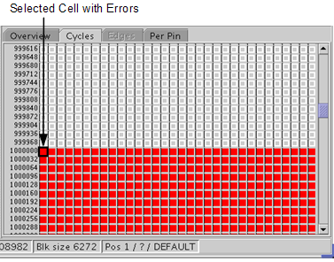

Cycles tab
The Cycles tab gives you a pass/fail result per cycle. It is based on the results that are recorded in the detailed Error Map.
If the result granularity is edge based, the cycle view will be derived from the edge results by the Error Map Tool. In this case the edge view is also available. You can reach the Edges tab by double-clicking the required cell. Then the Edges tab, which gives you a pass/fail result per edge, will be activated.

Functional changes
- Introduced before SmarTest 6.3.2